Quem fala em cada slide, o que dizer e quanto tempo leva. Orientador: Prof. Luiz Henrique Neves Rodrigues.
| Integrante | Slides | Qtd. | Tempo |
|---|---|---|---|
| André Luís Aguiar | 1–3, 16 | 4 | ≈ 2:05 |
| Guilherme Passinho | 4–7 | 4 | ≈ 3:25 |
| Hugo Oliveira | 8–11 | 4 | ≈ 2:10 |
| Raí Abreu | 12–15 | 4 | ≈ 3:00 |
| Total | 1–16 | 16 | ≈ 10:40 |
| Depois do slide | De | Para | Frase de ligação |
|---|---|---|---|
| 3 | André Luís Aguiar | Guilherme Passinho | “Agora o Guilherme explica como o circuito foi organizado.” |
| 7 | Guilherme Passinho | Hugo Oliveira | “Com os três blocos explicados, o Hugo mostra a simulação e os testes.” |
| 11 | Hugo Oliveira | Raí Abreu | “Agora o Raí apresenta os custos e o cronograma.” |
| 15 | Raí Abreu | André Luís Aguiar | (o André retoma para o encerramento) |
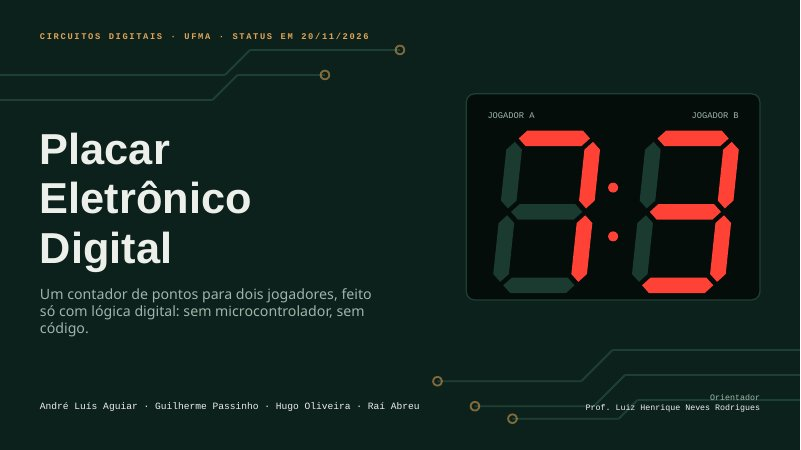
Boa tarde. Nós somos André, Guilherme, Hugo e Raí, e vamos apresentar o projeto de Circuitos Digitais orientado pelo professor Luiz Henrique: o Placar Eletrônico Digital.
A ideia é um placar de pontos para dois jogadores feito só com circuitos integrados de lógica digital. Não tem microcontrolador nem uma linha de código. Tudo o que vocês vão ver é contagem, decodificação e lógica combinacional.
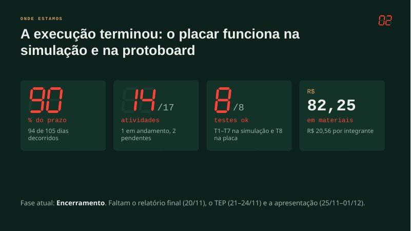
Começando pelo resumo. Hoje, 20 de novembro, já se passaram 94 dos 105 dias do projeto, cerca de 90% do prazo.
Das 17 atividades do cronograma, 14 estão concluídas. Uma está em andamento, o relatório final, e duas estão pendentes: o TEP e a apresentação final.
Os oito casos de teste foram aprovados: sete na simulação e o oitavo, que repete todos eles, na montagem física. O custo total dos materiais ficou em 82 reais e 25 centavos, uns 20 reais por integrante.
Ou seja, a fase de execução terminou e estamos no encerramento.
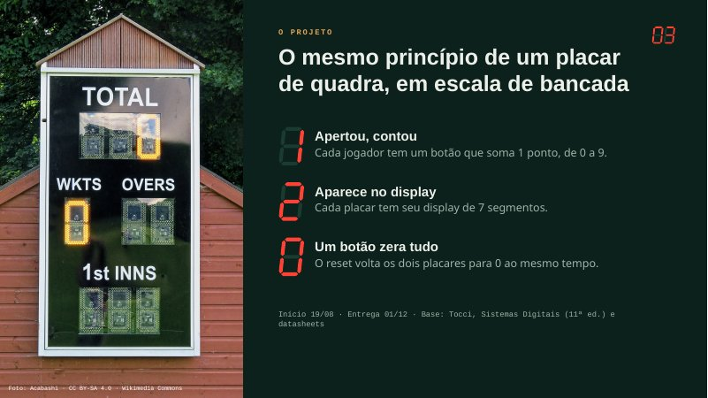
O princípio é o mesmo de um placar de quadra, como o da foto, só que em escala de bancada. São três requisitos.
Primeiro: cada jogador tem um botão, e cada toque soma um ponto, de 0 a 9. Segundo: cada placar aparece no seu próprio display de sete segmentos. Terceiro: um único botão de reset zera os dois placares ao mesmo tempo.
A base teórica foi o livro do Tocci, Sistemas Digitais, e os datasheets dos componentes. Agora o Guilherme explica como o circuito foi organizado.
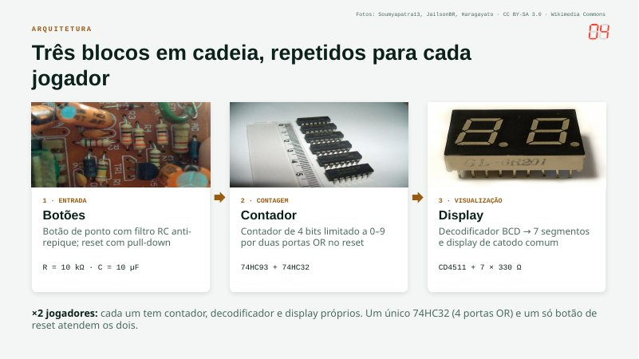
Dividimos o circuito em três blocos ligados em cadeia, e essa cadeia se repete para cada jogador.
O primeiro bloco é a entrada: o botão de ponto, com um filtro RC de 10 quilo-ohms e 10 microfarads, e o botão de reset, com um resistor de pull-down.
O segundo é a contagem: um contador 74HC93, limitado de 0 a 9 por duas portas OR do 74HC32.
O terceiro é a visualização: o decodificador CD4511, que converte o código binário para os sete segmentos, e um display de catodo comum com resistores de 330 ohms.
Como são dois jogadores, cada um tem seu contador, decodificador e display. O 74HC32 tem quatro portas OR, então um único chip atende os dois placares, e o botão de reset também é compartilhado.
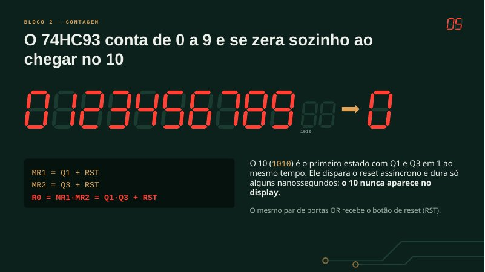
O 74HC93 é um contador binário assíncrono de 4 bits. Ligando a saída Q0 na entrada CP1, ele conta de 0 a 15, avançando na borda de descida do clock.
Ele zera quando as duas entradas de reset, MR1 e MR2, estão em nível alto. Como queremos parar no 9, ligamos uma porta OR em cada uma: MR1 = Q1 + RST e MR2 = Q3 + RST. Pela propriedade distributiva, o reset interno fica R0 = Q1·Q3 + RST.
O número 10, em binário 1010, é o primeiro estado em que Q1 e Q3 valem 1 juntos. Nesse instante o contador zera, em alguns nanossegundos. Por isso o 10 nunca chega a aparecer no display: depois do 9 vem direto o 0.
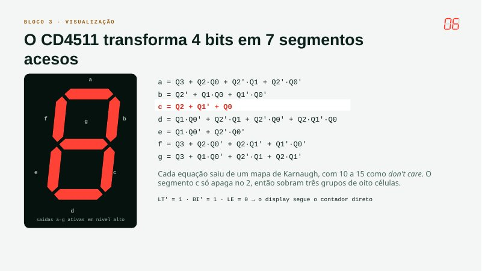
O CD4511 recebe os quatro bits do contador e acende os segmentos de a até g. As saídas são ativas em nível alto, o que combina com display de catodo comum.
Deixamos o teste de lâmpadas e o apagamento desligados e o latch transparente. Assim o display segue o contador direto.
Para documentar a lógica interna, simplificamos cada segmento por mapa de Karnaugh, usando as combinações de 10 a 15 como don't care, já que o contador nunca fica nelas. O exemplo destacado é o segmento c: ele só apaga no dígito 2, e a expressão mínima fica c = Q2 + Q1' + Q0.
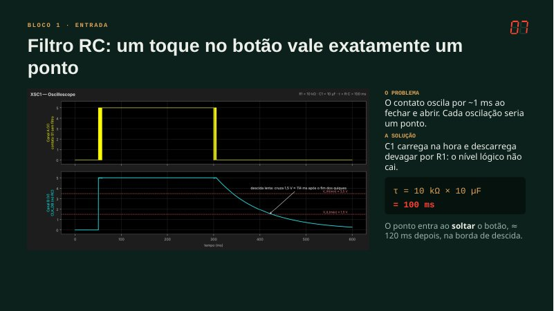
O último bloco resolve um problema físico. Ao apertar ou soltar, o contato do botão oscila por cerca de um milissegundo. É o bounce. Como o contador reage a bordas, cada oscilação poderia virar um ponto.
O capacitor resolve isso: quando o botão fecha, ele carrega na hora; nas aberturas rápidas do bounce, descarrega devagar pelo resistor. A constante de tempo é de 100 milissegundos, então a tensão não chega a cair abaixo do nível lógico.
No osciloscópio, em cima está o contato com as oscilações e embaixo o sinal filtrado, limpo. Um detalhe: o ponto é contado quando o botão é solto, cerca de 120 milissegundos depois, na borda de descida.
Com os três blocos explicados, o Hugo mostra a simulação e os testes.
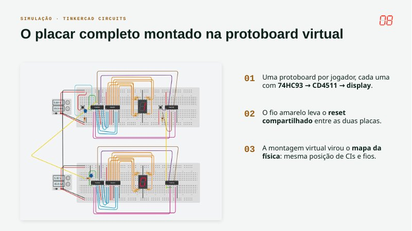
Antes de comprar qualquer peça, montamos o placar completo no Tinkercad Circuits.
São duas protoboards, uma por jogador, e cada uma tem o caminho 74HC93, CD4511 e display. O fio amarelo leva o reset compartilhado entre as duas placas.
Essa montagem virtual serviu de mapa para a montagem física: os CIs e os fios ficam na mesma posição, o que reduziu bastante os erros na bancada.
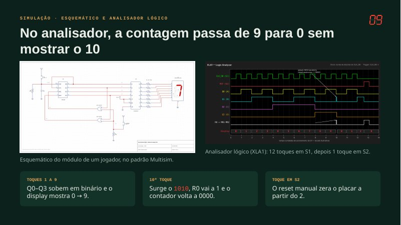
Também documentamos o circuito no padrão do Multisim. À esquerda está o esquemático do módulo de um jogador, com referências, pinos e o display.
À direita está o analisador lógico. Damos doze toques no botão de ponto e depois um no reset. Nos nove primeiros toques, as saídas sobem em binário e o display vai de 0 a 9.
No décimo toque aparece o estado 1010 por um instante; o sinal R0 vai a 1 e o contador volta para 0000. Depois, o reset manual zera o placar a partir do 2.
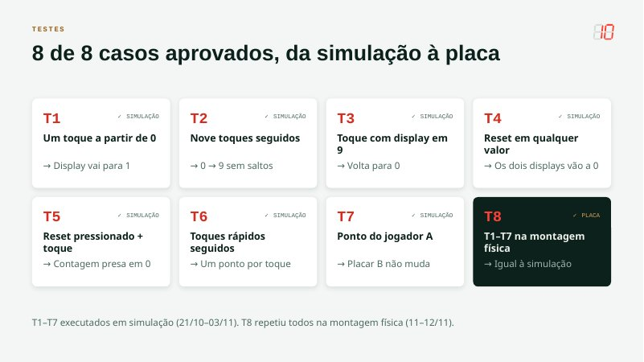
Fizemos oito casos de teste. Os sete primeiros, na simulação: um toque a partir do zero, nove toques seguidos sem pular número, o retorno do 9 para o 0, o reset em qualquer valor, o reset pressionado bloqueando a contagem, toques rápidos sem contagem dupla e a independência entre os placares: o ponto do jogador A não mexe no B.
O teste T8 repetiu todos eles na montagem física, com o mesmo resultado da simulação. Por isso o placar está oito de oito.
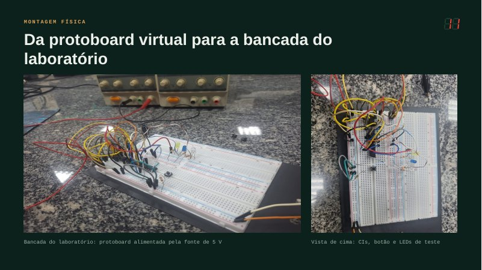
Com tudo validado na simulação, compramos os materiais e montamos o circuito na protoboard, seguindo a mesma disposição do Tinkercad.
Nas fotos está a bancada do laboratório, com a protoboard alimentada pela fonte de 5 volts, e a vista de cima, com os CIs, o botão e os LEDs de teste.
Agora o Raí apresenta os custos e o cronograma.
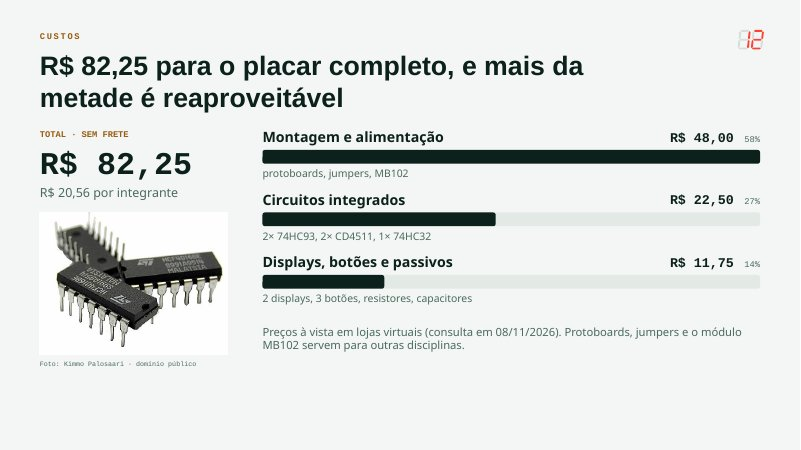
O custo de referência do placar completo, para os dois jogadores, foi de 82 reais e 25 centavos, sem frete. Dá 20 reais e 56 centavos por integrante.
A maior parte, 48 reais, ou 58%, é de protoboards, jumpers e o módulo de alimentação MB102, itens que reaproveitamos em outras disciplinas. Os circuitos integrados custaram 22 reais e 50 centavos, cerca de 27%. Displays, botões, resistores e capacitores somaram 11 reais e 75 centavos.
Os preços foram consultados em lojas virtuais em 8 de novembro, à vista.
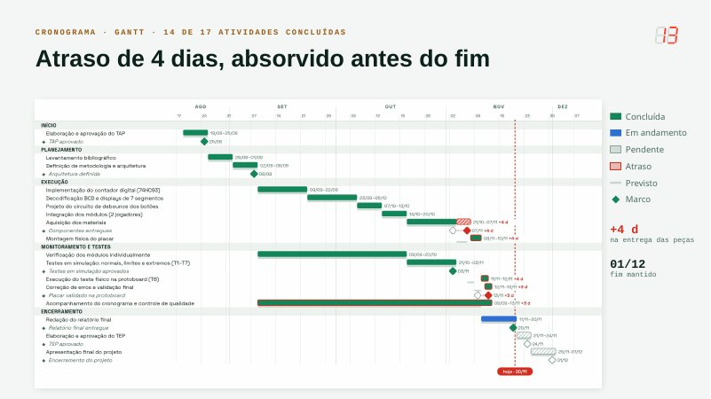
Este é o gráfico de Gantt, com o previsto e o realizado. A faixa cinza embaixo de cada barra é o que foi planejado no Termo de Abertura, os losangos são os marcos e a linha tracejada vermelha marca hoje, 20 de novembro.
A pedido do professor, todos os testes ficaram na fase de Monitoramento e Testes: a verificação dos módulos, os testes em simulação, o teste físico e a validação final. Na Execução ficou só a construção do circuito.
Tivemos um atraso: a entrega dos componentes estava prevista para 3 de novembro e só chegou no dia 7, quatro dias depois. Com isso, a montagem, o teste físico e a validação foram empurrados, e a validação terminou em 13 de novembro, e não no dia 10.
Como o relatório final começou no prazo, em paralelo, a folga absorveu esse atraso. Nenhum marco do encerramento mudou e o projeto continua terminando em 1º de dezembro.
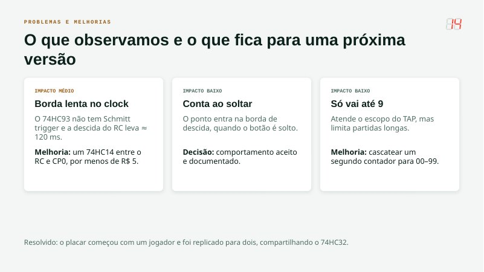
Registramos três pontos. O de impacto médio é a borda lenta no clock: o 74HC93 não tem entrada Schmitt trigger, e a descida do filtro RC leva uns 120 milissegundos. Como melhoria para uma próxima versão, dá para colocar um 74HC14 entre o filtro e o contador, por menos de 5 reais.
O segundo é que o ponto conta ao soltar o botão, não ao apertar. Aceitamos e documentamos esse comportamento.
O terceiro é que o placar vai só até 9. Isso atende o escopo, mas dá para cascatear um segundo contador e chegar a 99. E um problema que já resolvemos: o placar começou com um jogador e foi estendido para dois.
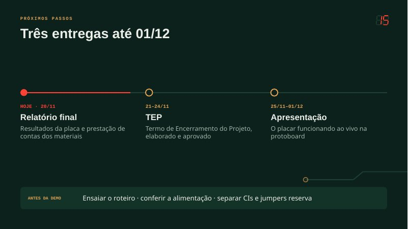
Faltam três entregas. Hoje, o relatório final, com os resultados da placa e a prestação de contas dos materiais. De 21 a 24 de novembro, o Termo de Encerramento do Projeto. E de 25 de novembro a 1º de dezembro, a apresentação final, com o placar funcionando ao vivo.
Antes da demonstração, vamos ensaiar o roteiro, conferir a alimentação e levar CIs e jumpers reserva.
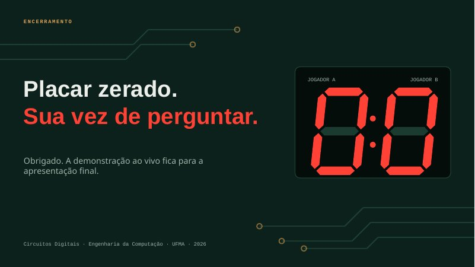
Para fechar: o placar já funciona na simulação e na protoboard, dentro do prazo e com um custo baixo. A demonstração ao vivo fica para a apresentação final.
Obrigado. O placar está zerado, agora é a vez de vocês: ficamos à disposição para perguntas.
Porque o 1010 dispara o reset na hora: R0 = Q1·Q3 vai a 1 e o contador zera em nanossegundos, rápido demais para o display mostrar.
O 74HC93 avança na borda de descida. Com o filtro RC, essa borda só acontece depois que o botão é solto, cerca de 120 ms depois.
O RC resolveu o bounce com dois componentes baratos. O 74HC14 (Schmitt trigger) fica como melhoria, porque a borda lenta pode gerar contagem dupla em alguns casos.
Pelos casos T1 a T7 na simulação, pelo analisador lógico e pelo T8, que repetiu todos na montagem física com o mesmo resultado.
Sim: basta cascatear um segundo contador para as dezenas, com outro decodificador e display. Ficou fora porque o escopo do TAP é de 0 a 9.
R$ 82,25 no total. Protoboards, jumpers e o MB102 (R$ 48,00, 58%) servem para outras disciplinas.